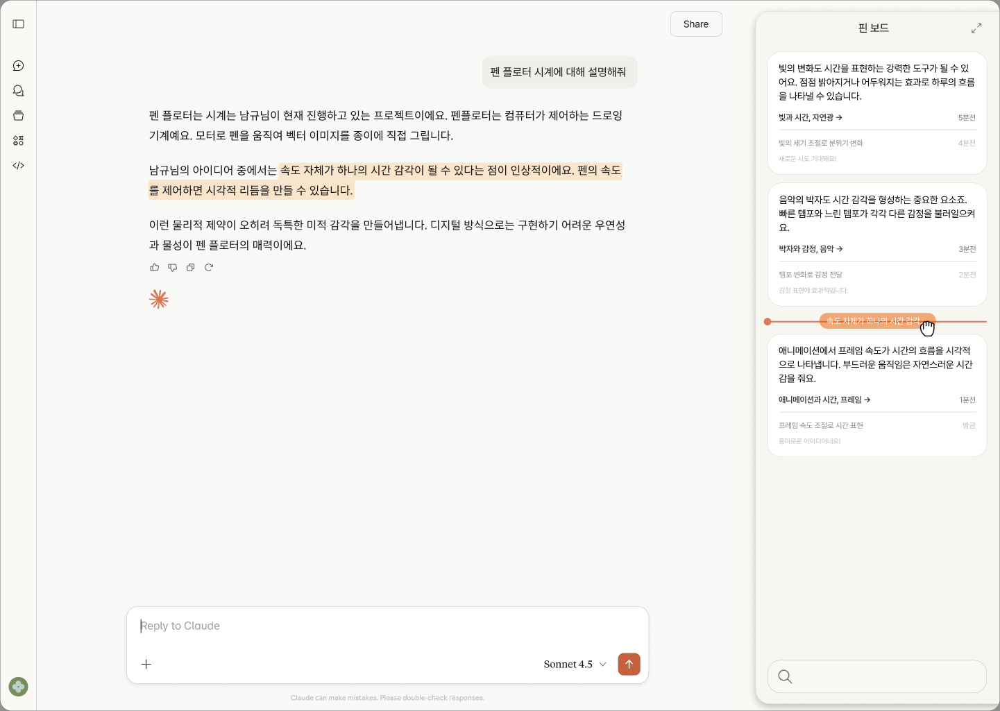
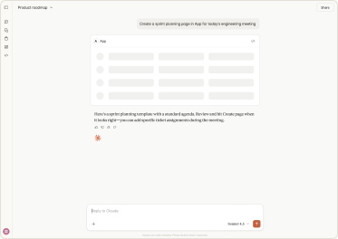
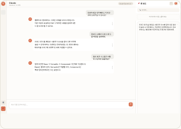
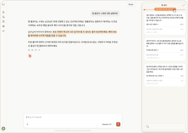
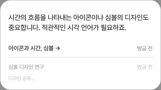
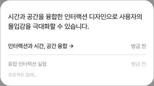

Apple Notes
빠르게 담는 캡처
Product design / AI conversation
2026 · Personal concept
좋은 답변을 복사하는 데서 끝나지 않도록.
문장을 끌어 담고, 정리하고, 그 대화로 돌아가는 경험을 설계했습니다.

선택부터 재진입까지. 최종안의 여섯 장면으로 핵심 경험을 살펴보세요.
AI 답변의 일부를 다른 앱에 복사하면, 어떤 질문에서 나온 문장인지 다시 찾기 어렵습니다. 저장한 문장이 원래 대화로 이어지도록 만드는 것이 이 프로젝트의 출발점입니다.
빠르게 담는 캡처
작업 곁의 보관함
읽는 흐름 속 저장
원본으로 돌아가는 연결
저장 이후의 정리 부담 줄이기
프로젝트 당시 레퍼런스 분석에서 도출한 설계 원칙입니다. 사용자 인터뷰나 사용성 검증 결과는 아닙니다.

01 / 메모 탭
문장을 저장하고 별도 탭의 그리드에서 확인하는 방식.
대화를 떠나야 한다는 단절이 남았습니다.

02 / 앵커와 패널
메시지의 앵커 버튼과 사이드 패널로 저장과 확인을 한 화면에 배치했습니다.
저장 범위를 메시지 전체에서 문장으로 좁혔습니다.

03 / Final
문장 선택, 드래그 카드, 삽입선, 핀 카드, 원문 링크를 하나의 흐름으로 연결했습니다.
담는 순간 위치와 출처가 함께 결정됩니다.
사이드바, 대화, 입력창은 익숙한 구조를 유지합니다. 그 위에 문장 단위의 저장과 핀 보드를 더해, 대화를 읽는 일과 다시 찾는 일이 이어지게 했습니다.
원본의 Sidebar, Claude response, Chat input과 아이콘을 활용하고, 핀 카드와 드래그 상태를 같은 시각 언어로 연결했습니다.


사용자 테스트 전 단계의 컨셉입니다. 실제 AI 모델 연동과 협업·공유 기능은 포함하지 않습니다.